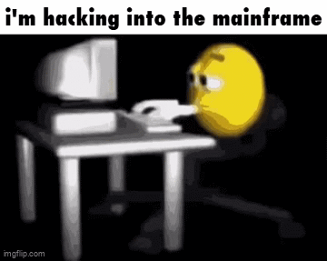
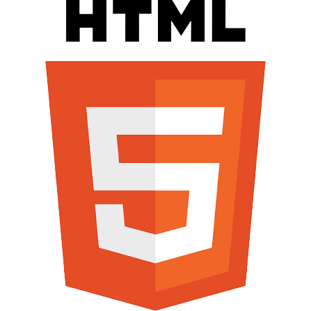
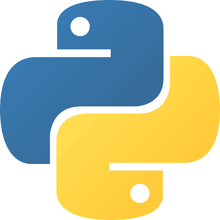
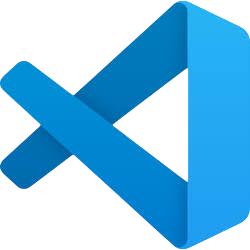
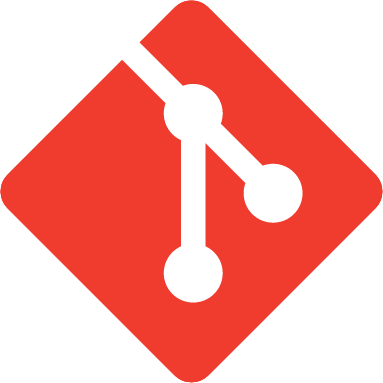

Olá, me chamo Guilherme Cordeiro.
Um simples estudante de informática da E.E.E.P Jeová Costa Lima. Bem vindo(a) ao meu portfólio.
Meus Interesses
Cibersegurança

Desenvolvedor de Software / DevSecOps

Tecnologias
Linguagens
-
HTML

HTML (abreviação para a expressão inglesa HyperText Markup Language, que significa: "Linguagem de Marcação de Hipertexto") é uma linguagem de marcação utilizada na construção de páginas na Web. -
CSS
 Folhas de Estilo em Cascata (CSS) é uma linguagem de folhas de estilo usada para especificar a apresentação e o estilo de um documento escrito em uma linguagem de marcação , como HTML. O CSS é uma tecnologia fundamental da World Wide Web, juntamente com HTML e JavaScript.
Folhas de Estilo em Cascata (CSS) é uma linguagem de folhas de estilo usada para especificar a apresentação e o estilo de um documento escrito em uma linguagem de marcação , como HTML. O CSS é uma tecnologia fundamental da World Wide Web, juntamente com HTML e JavaScript. -
Python

Python é uma linguagem de programação de alto nível e de propósito geral que enfatiza a legibilidade do código, a simplicidade e a facilidade de escrita com o uso de indentação significativa, uma extensa biblioteca padrão e coleta de lixo. -
PHP
 PHP (um acrônimo recursivo para "PHP: Hypertext Preprocessor", originalmente Personal Home Page) é uma linguagem interpretada livre, usada originalmente apenas para o desenvolvimento de aplicações presentes e atuantes no lado do servidor, capazes de gerar conteúdo dinâmico na World Wide Web.
PHP (um acrônimo recursivo para "PHP: Hypertext Preprocessor", originalmente Personal Home Page) é uma linguagem interpretada livre, usada originalmente apenas para o desenvolvimento de aplicações presentes e atuantes no lado do servidor, capazes de gerar conteúdo dinâmico na World Wide Web. -
JavaScript
 JavaScript (frequentemente abreviado como JS) é uma linguagem de programação interpretada estruturada, de script em alto nível com tipagem dinâmica fraca e multiparadigma (protótipos, orientado a objeto, imperativo e funcional).
JavaScript (frequentemente abreviado como JS) é uma linguagem de programação interpretada estruturada, de script em alto nível com tipagem dinâmica fraca e multiparadigma (protótipos, orientado a objeto, imperativo e funcional). -
Lua
 Lua é uma linguagem de programação interpretada, de script em alto nível, com tipagem dinâmica e multiparadigma, reflexiva e leve, projetada pela Tecgraf da PUC-Rio em 1993 para expandir aplicações em geral, de forma extensível (que une partes de um programa feitas em mais de uma linguagem), para prototipagem e para ser embarcada em softwares complexos, como jogos.
Lua é uma linguagem de programação interpretada, de script em alto nível, com tipagem dinâmica e multiparadigma, reflexiva e leve, projetada pela Tecgraf da PUC-Rio em 1993 para expandir aplicações em geral, de forma extensível (que une partes de um programa feitas em mais de uma linguagem), para prototipagem e para ser embarcada em softwares complexos, como jogos.
Ferramentas
-
Visual Studio Code

O Visual Studio Code é um editor de código-fonte desenvolvido pela Microsoft para Windows, Linux e macOS. -
Git

Git é um sistema de softwarede controle de versão distribuído capaz de gerenciar versões de código-fonte ou dados. -
GitHub
 O GitHub é uma plataforma de hospedagem de código-fonte e arquivos com controle de versão usando o Git.
O GitHub é uma plataforma de hospedagem de código-fonte e arquivos com controle de versão usando o Git. -
Burp Suite
Burp Suite é um software desenvolvido em Java pela PortSwigger, para a realização de testes de segurança em aplicações web.